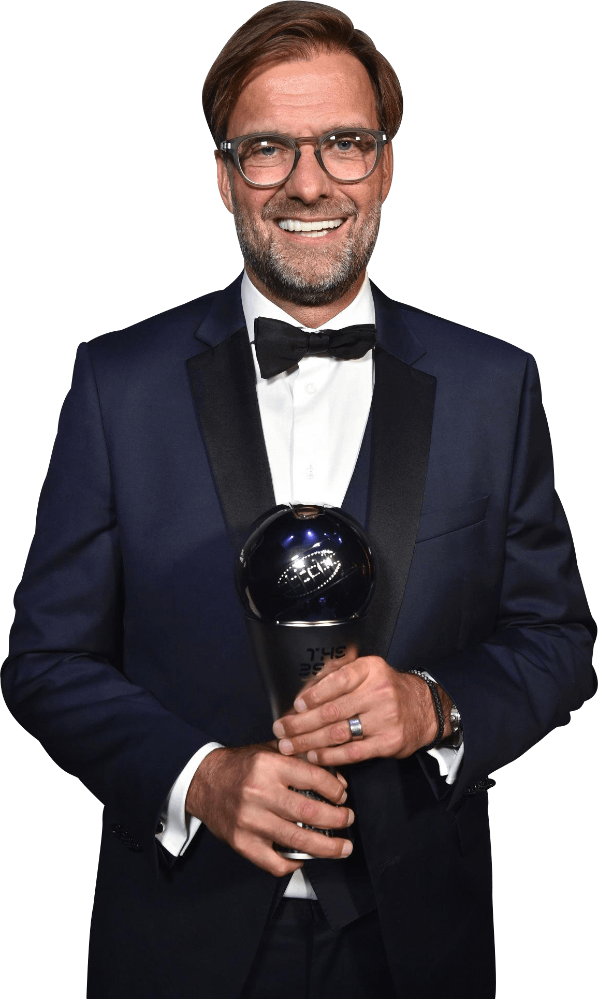
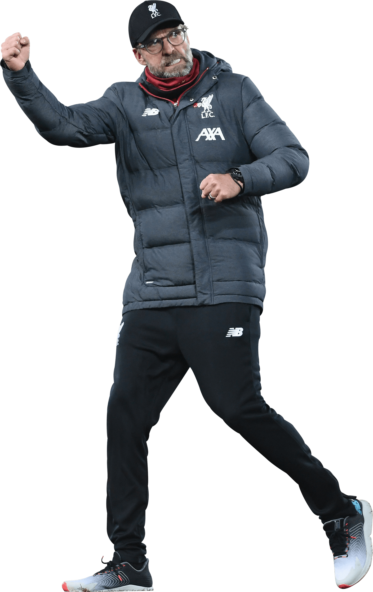
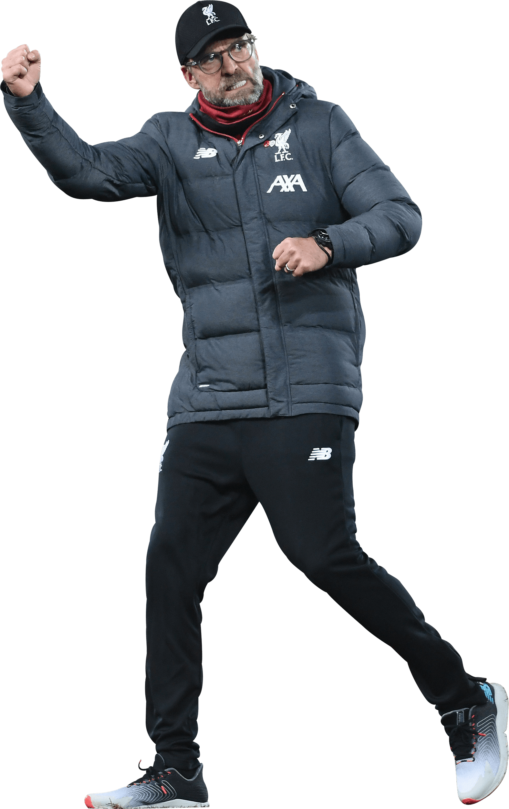

Jurgen klopp
Quick facts: Jürgen Klopp er tysk fotballtrener, som har vært manager for Liverpool FC siden 2015.
I 2020 førte han klubben til sitt første seriemesterskap på 30 år. Under Klopps ledelse er Liverpool blitt en av Europas beste fotballklubber.
Jürgen Klopp er kjent for å være svært aktiv på sidelinjen under kampene.
Klopp står for en offensiv og intensiv spillestil der han ønsker å styre kampene gjennom å ha mye ballbesittelse.
Meritter
Borussia Dortmund (trener)
Bundesliga (2): 2010/2011, 2011/2012
DFB Pokal (1): 2011/2012
DFL supercup (2): 2013, 2014
Liverpool (trener)
Premier League (1): 2019/2020
FA-cup mester (1): 2022
Ligacup mester (1): 2022
Community Shield (1): 2022
Mesterligaen (1): 2018/2019
UEFA-supercup (1): 2019
VM for klubblag (1): 2019
Personlige utmerkelser
Årets trener av FIFA (1): 2019
Årets trener i Premier League (1): 2019/2020
Årets trener i Tyskland (3): 2011, 2012, 2019
Karriere som spiller
Før Jürgen Klopp kom til Mainz, hvor han var fra 1990 til 2001, hadde han spilt for flere mindre kjente tyske klubber. Klopps posisjon på banen var som høyre back, men han ble også brukt som midtstopper og spiss. Han var ingen finslepen tekniker, men hans høyde, duellstyrke, vinnervilje og fotballforståelse gjorde han til en viktig spiller for Mainz.
Klopp avsluttet sin spillerkarriere i Mainz da han var 34 år og står oppført med 325 kamper for klubben.


 
